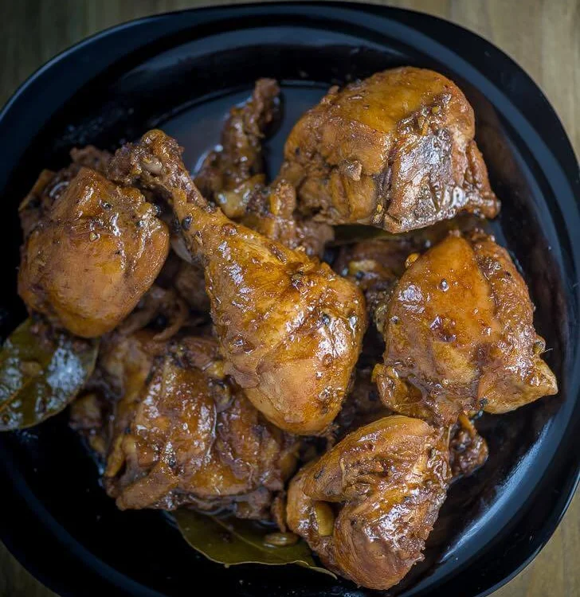

Odin Recipes
Chicken Adobo

Desrciption
Chicken Adobo is an authentic Filipino dish and is one of the mostly recognized Filipino foods.
Not to be mistaken with Mexican adobo, this dish is uniquely prepared by stewing chicken in vinegar and soy sauce.
Several sources who are experts in Asian food history say that the Filipinos were already cooking adobo even before Spanish colonization.
According to them, cooking with vinegar preserves the meat.
This method is also considered as one of the earliest food preservation practice.
Ingredients
- 1kg chicken
- 3 pieces of dried bay leaves
- 4 tbsp. of soy sauce
- 2 tbsp. of white vinegar
- 3 cloves of garlic
- 500g of water
- 56g of cooking oil
- 0.5 tbsp. of sugar
- 0.5 tsp. of salt
- 1 tbsp. of whole peppercorn
Instructions